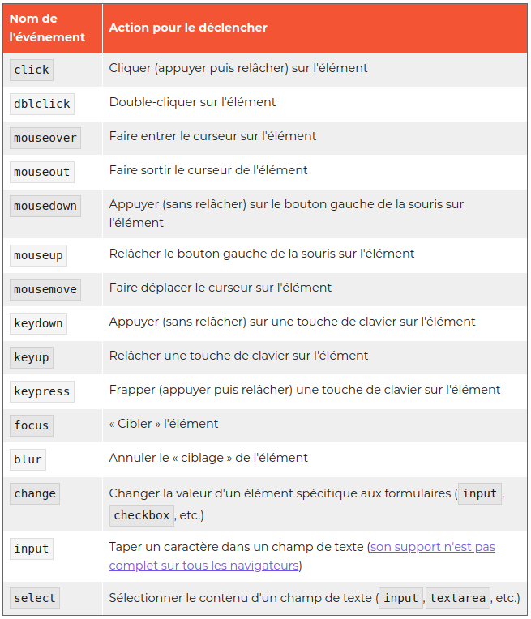

Les évènements
Le JavaScript est un langage événementiel, c'est-à-dire qu'il est capable de détecter les événements qui surviennent sur la page, y réagir et déclencher de nouveaux traitements. Un événement est un changement d'état qui survient sur la page (mouvements de souris, clic sur un élément, chargement d'un élément de la page, etc.).

La détection dans le code HTML
Cette manière de déclarer des événements par attribut est rapide mais présente l'inconvénient de mélanger le traitement JavaScript à la mise en forme des données via HTML.
La détection par le gestionnaire d'événements
Le gestionnaire d'événements permet de centraliser la déclaration des événements dans un bloc JavaScript sans modifier le code HTML gardant ainsi la séparation entre traitements et données.
target.addEventListener(String myEvent, Function toDo, [options]);
- target : correspond à l'élément ciblé dans le code HTML.
- myEvent : le type d'événement à détecter.
- toDo : une fonction qui reçoit en paramètre l'objet de type
Eventdétecté. - Le paramètre facultatif options spécifie les caractéristiques de l'écouteur d'évènements (e.g.
{"once": true}supprime automatiquement le listener après son premier appel.
La fonction colorChange() reçoit en paramètre evt un objet de type Event. Un objet Event contient deux propriétés de cible. La propriété currentTarget refréférence l'objet sur lequel l'événement a été attaché et la propriété target référence l'objet sur lequel l'événement s'est produit.
- Arthur
- Perceval
- Merlin
La fonction target.removeEventListener(String myEvent, Function toDo, [options]); permet de supprimer l'événement de type myEvent associé à la fonction toDo.
Les événements du clavier et de la souris
Le clavier déclenche deux événements principaux : keydown (une touche est enfoncée) et keyup (la touche est relâchée). L'objet Event reçu contient la propriété key, le nom de la touche ("a", "Enter", " " pour la barre d'espace, "ArrowLeft", "ArrowRight"…) et la propriété repeat qui vaut true quand la touche est maintenue (le navigateur répète alors keydown).
Contrairement à un bouton, une touche n'est pas liée à un élément précis : on écoute généralement l'événement sur document.
Pour piloter un objet en continu (par exemple un personnage dans un jeu), il est préférable de mémoriser l'état des touches plutôt que de déplacer l'objet directement dans le gestionnaire : keydown passe l'état à true, keyup le repasse à false, et une autre partie du code lit cet état régulièrement.
Essayez la zone ci-dessous : cliquez dessus pour lui donner le focus puis appuyez sur des touches.
La souris fonctionne de la même manière avec les événements click, mousedown, mouseup et mousemove. Les coordonnées du pointeur sont dans evt.clientX et evt.clientY (relatives à la fenêtre). Pour obtenir la position dans un élément (par exemple un canvas), on retranche la position de l'élément donnée par element.getBoundingClientRect().
La manipulation du document
Le DOM
Le DOM (Document Object Model) est une organisation hiérarchisée en arborescence de l'ensemble des éléments du document. Chaque élément forme un noeud (node) dans le document.
L'objet document représente la page HTML chargée dans le navigateur. Il constitue l'objet racine du DOM et permet d'accéder à l'ensemble des éléments de la page, ainsi que de les rechercher, les manipuler et d'en créer de nouveaux.

Trouver les éléments du document
Il existe plusieurs méthodes permettant de rechercher des éléments au sein du DOM qui se basent sur la nature des balises ou de leurs attributs.
getElementById(String param) retourne le premier élément HTML du DOM ayant l'attribut id passé en paramètre. getElementsByClassName(String param) retourne une liste d'éléments dont la classe CSS correspond au nom de classe passé en paramètre. getElementsByTagName(String param) retourne une liste d'éléments dont la balise correspond à la balise passée en paramètre. getElementsByName(String param) retourne une liste d'éléments dont l'attribut name correspond au nom passé en paramètre (l'attibut name est généralement utilisé pour envoyer des données côté serveur par l'intermédiaire d'un formulaire). querySelectorAll(String param) retourne tous les éléments trouvés dans le DOM répondant au sélecteur CSS (la notation CSS pour accéder aux éléments) passé en paramètre. Cette méthode permet notamment de réaliser des requêtes plus précises par rapport à getElementsByClassName(). querySelector(String param) retourne le premier élément trouvé dans le DOM répondant au sélecteur CSS passé en paramètre. Voir l'exemple.
Créer de nouveaux éléments
JavaScript permet de créer, d'ajouter ou bien de supprimer des éléments HTML.
La méthode createElement()
La création d'un nouvel élément est réalisée avec la méthode document.createElement(String typeElement). Le paramètre typeElement est une chaîne désignant la balise de l'élément à créer.
Ajouter des éléments dans le document
À ce moment, la div n'est pas encore sur le document. Il n'est qu'un objet JavaScript en mémoire. La seconde étape est de l'ajouter à l'endroit voulu au sein du DOM. La méthodes parent.appendChild(HTMLElement enfant) permet d'ajouter la balise à l'élément parent.
Supprimer un élément HTML
La méthode removeChild() retire du DOM l'élement enfant de son élément parent. Voir l'exemple.
Accéder aux attributs
Les attributs simples
Le JavaScript dispose de méthodes pour accéder aux attributs d'un élément HTML.
-
hasAttribute(String nomAttribut)retournetruesi l'attribut passé en paramètre est présent dans la balise. -
getAttribute(String nomAttribut)retourne le contenu de l'attribut passé en paramètre. -
setAttribute(String nomAttribut, String valeur)modifie le contenu d'un attribut.
Ajoutez la balise <div id="mydiv">My div</div> à votre page HTML, puis parcourez l’ensemble des balises <div> afin d’identifier celle dont l’attribut id vaut mydiv et de le remplacer par mynewdiv.
Les attributs de données
La norme HTML du W3C définit strictement les attributs et les noms autorisés par balise. Cependant, il est possible de stocker directement dans le DOM des données via des attributs. Pour respecter la norme HTML, les noms des attributs doivent commencer par data- suivi d'un nom au choix (c'est une convention). Par exemple, il est possible de créer la balise <div data-clics="0">Nombre de clics</div>.
À partir de la balise suivante <div id="mydiv">Cliquer.</div> ajouter l'attribut de données data-clics et data-last-clics qui permet respectivement de stocker le nombre de fois où l'utilisateur a cliqué sur la balise et la date de son dernier clic. Vous pouvez utiliser la méthode new Date().getTime() (= nombre de millisecondes écoulées depuis le 1er janvier 1970).
Conserver des données : le localStorage
Les variables disparaissent quand la page est rechargée. Pour conserver une information (un meilleur score, une préférence de thème…), le navigateur propose l'objet localStorage, un petit espace de stockage propre au site qui persiste même après la fermeture du navigateur. Il fonctionne par paires clé/valeur, et les valeurs sont toujours des chaînes de caractères.
-
localStorage.setItem(cle, valeur): enregistre une valeur. -
localStorage.getItem(cle): lit une valeur, ounullsi la clé n'existe pas. -
localStorage.removeItem(cle): supprime une clé.
Pour stocker un tableau ou un objet, on le transforme en chaîne JSON avec JSON.stringify() puis on le reconstruit avec JSON.parse().
Les données sont visibles et modifiables par l'utilisateur (onglet Application des outils de développement) : n'y stockez jamais d'information sensible et ne leur faites pas confiance sans vérification.
Rendez-vous au lien suivant: https://github.com/PAJEAN/cours_javascript/tree/master/exemples/bst pour réaliser le TP sur l'arbre binaire de recherche (BST).
Fichier HTML.
Fichier JavaScript.